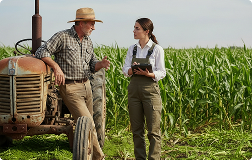

Expliquer les IA
Agricoles
Les modèles de deep learning cartographient nos champs depuis l'espace mais personne ne comprend pourquoi ils décident ce qu'ils décident. EDEM change ça.
Découvrir le projet
Actualités
Les dernières nouvelles
Toutes les publications
Les dernières nouvelles
du projet

Recherche
Une recherche pour
Une recherche pour
l'intérêt de l'humanité
Chercheurs et agriculteurs se sont réunis pour trouver une solution : l'intelligence artificielle peut épauler les professionnels agricoles dans leurs prises de décisions, en rendant les modèles satellites compréhensibles et actionnables.
Voir les publications
Équipe
Une équipe de chercheurs
Une équipe de chercheurs
déterminée
Les membres du laboratoire ETIS combinent expertise en apprentissage automatique, traitement d'images satellite et agronomie. Leur objectif commun : rendre l'IA agricole transparente, fiable et utile sur le terrain.
Voir l'équipe